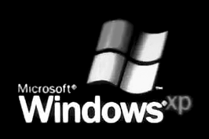
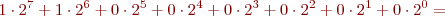
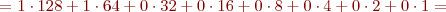
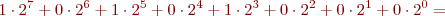
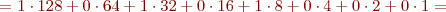
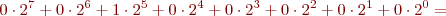
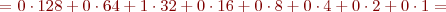
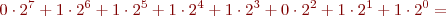
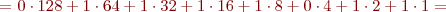

Adreçament físic i lògic de la xarxa
Com ja sabeu, podeu utilitzar un ordinador per connectar-vos a Internet. Aquesta connexió és possible, entre moltes més raons, perquè l’ordinador disposa d’una adreça IP i una adreça MAC (adreça física) única per poder ser identificat a la xarxa; l’adreça IP fa que la vostra màquina sigui l’única que rebi la informació que heu demanat.
Adreçament físic
Per poder connectar un ordinador a una xarxa és necessari que aquest disposi d’una targeta de xarxa, la qual s’identifica amb l’adreça MAC, que és única per a cada targeta de xarxa existent al món.
Si coneixeu l’adreça MAC i la utilitzeu és possible transmetre dades. D’aquesta manera, la informació arribarà únicament a la màquina que voleu, ja que és l’única que té el mateix nombre que heu fet servir.
Per poder comprovar l’adreça MAC de la vostra targeta de xarxa el que heu de fer varia depenent del sistema operatiu que utilitzeu:
1. Sistema operatiu amb nucli Linux.
- Logotip de Linux
Si es tracta d’un sistema operatiu amb nucli Linux, heu d’obrir una consola de text i executar l’ordre ifconfig. Per canviar a una consola de text, el més comú és utilitzar la combinació de tecles de control, alternativa i funció 1 (Ctrl + Alt + F1). Per tornar a l’entorn gràfic habitualment cal prémer la combinació control, alternativa i funció 7 (Ctrl + Alt + F7). En algunes instal·lacions canvien els números de les tecles de funció.
També es pot canviar a una consola de text utilitzant el terminal de text de l’entorn gràfic. Hi ha diferents maneres de fer-ho, en funció de la distribució que utilitzem:
- Fer clic a la icona opció de menú corresponent (pot anomenar-se terminal o consola).
- Per entorns d’escriptor de l’estil d’Unity: buscar la paraula terminal (és el nom de l’aplicació corresponent).
- Anar a Executar ordre i executar l’ordre konsole o la comanda corresponent de la vostra distribució (vegeu la figura).
Un cop executada aquesta ordre, s’obrirà una finestra (vegeu la figura) de mode de text on podreu executar l’ordre ifconfig.
Una vegada executada ja l’ordre ifconfig, veieu una finestra (figura) que mostra tota la informació sobre les connexions de xarxa. Com podeu comprovar, teniu molta informació i només cal que seleccioneu la que us interessa.
En aquest cas, heu de buscar la informació sobre l’adreça MAC en l’entrada Hwaddr (adreça de maquinari o hardware address). Com s’ha comentat, el resultat ha de ser un nombre de 12 caràcters en format hexadecimal.
En aquest cas es tracta de la targeta de xarxa Ethernet, que en GNU/Linux és la interfície eth0; també es podria trobar un altra interfície Ethernet, que seria la eth1.
- 
- Logotip de Windows
2. Sistema operatiu del tipus Windows XP o Windows 2000.
Si es tracta d’un sistema operatiu del tipus Windows XP o Windows 2000, heu d’obrir una consola de text i executar ipconfig/all. D’aquesta manera, hi trobareu tota la informació necessària.
Per iniciar una consola de text, heu d’anar a Inici/Executar i utilitzar l’ordre cmd (vegeu la figura).
Un cop s’ha obert la finestra de text, si executeu l’ordre ipconfig /all us mostra tota la informació (vegeu la figura). Si executeu només ipconfig, veureu l’adreça IP de la vostra màquina i la màscara de subxarxa.
Un cop executada aquesta ordre, podeu veure que apareix molta informació (vegeu la figura); només cal trobar la que us interessa en aquest moment.
Un cop heu aconseguit arribar a aquesta pantalla, n’heu d’analitzar el contingut: com podeu comprovar, hi apareix el nom de la màquina, el seu número, el DNS principal, el model de targeta instal·lat –que és a Descripció; en aquest cas, veieu que es tracta d’una targeta sense fils o wireless fabricada per Intel– i, finalment, l’adreça MAC, que és un nombre de 12 xifres en format hexadecimal.
És molt important que tingueu en compte el sistema operatiu amb el qual treballeu, ja que a cada sistema s’utilitzen ordres diferents per poder accedir a la informació que ens interessa, en aquest cas l’adreça MAC.
Com podeu comprovar, l’adreça MAC i l’adreça IP no són les úniques informacions que hi apareixen. En aquests moments veieu molta informació que no sabeu què significa ni per què serveix, però no us preocupeu, ja que us serà molt familiar en acabar aquest mòdul.
Adreçament lògic
L’adreça IP és la responsable que la vostra màquina sigui trobada a la xarxa. Aquesta adreça ha de ser única per a cada ordinador, ja que si n’hi hagués més d’una màquina amb la mateixa adreça, entrarien en conflicte i cap d’elles no podria rebre informació. Aquest fet podria provocar un malfuncionament de tota la xarxa i això cal evitar-ho.
L’adreça IP està composta per un nombre prou alt de bits perquè l’IP no es repeteixi en dues màquines diferents. En realitat, l’adreça està composta per 32 bits agrupats en grups de 8 bits que formen 4 octets. Quan llegiu una adreça IP, trobareu quatre grups de vuit bits cadascun.
Un octet està format per l’agrupació de vuit bits.
La notació decimal
La notació decimal és aquella amb què tots esteu acostumats a treballar des de petits. Cal tenir en compte que, al contrari del que sempre s’ha dit, no es comença a comptar per l’1 sinó pel 0. Si no ho feu així, durant tot aquest mòdul tindreu moltes dificultats.
Com heu vist, el fet que una adreça IP estigui formada per bits genera un problema en les persones que no estan acostumades a treballar en sistema binari és a dir, utilitzant bits. Per aquesta raó, les adreces IP també s’expressen en notació decimal, que és la que esteu acostumats a utilitzar i fàcil de comprendre. Quan utilitzeu aquesta notació, comprovareu que una adreça IP està formada per quatre grups de nombres separats per un punt, com podeu veure a la taula.
Canvi de sistema
Per fer el canvi d’un sistema de numeració a l’altre, agafareu un octet i el transformareu, a continuació agafareu un altre octet i també el transformareu, i ho fareu així fins a tenir els quatre octets transformats. Un cop hàgiu acabat aquesta tasca, agafareu els nombres que heu calculat i els escriureu separats per un punt.
Màxim valor binari: 11111111. Màxim valor decimal: 255
| Adreça IP en notació decimal | Adreça IP en notació binària |
|---|---|
192.168.34.6 | 11000000.10101000.00100010.00000110 |
La separació per punts facilita la lectura i la comprensió de l’adreça IP, i també la conversió de notació binària a notació decimal. A més, utilitzant aquest sistema el nombre més gran que hi pot haver en cada octet és quan els vuit bits tenen el valor d’1. Així doncs, fent la conversió comprovareu que el valor màxim en notació decimal seria de 255. Aquesta transformació de binari a decimal serà molt important durant tot el mòdul. Per tant, val la pena que domineu el canvi d’una notació a l’altra.
De decimal a binari
A continuació, veureu uns quants exemples de canvi de base perquè pugueu practicar la conversió de binari a decimal i de decimal a binari.
El primer exemple de transformació serà el corresponent a l’adreça IP 192.168.32.123.
Ús del sistema decimal
El canvi de base serà un dels més utilitzats a l’hora de crear xarxes, ja que les adreces IP es donen en notació decimal perquè les persones les comprenguin millor.
Prenem el 192 i, com que s’ha de passar a notació binària, comencem a dividir el nombre per la base a la qual volem arribar, és a dir, 2 (figura).
Un cop s’ha fet la divisió, agafarem les restes de cada divisió feta però en sentit contrari –tal com indica la fletxa–: si ho fem així, el nombre en notació binària que us queda és el següent: 11000000
Una adreça IP consta de quatre octets separats per punts. Com que s’ha pres un dels camps de l’adreça en notació decimal per transformar-la a notació binària, el resultat hauria de ser un octet –és a dir, 8 bits–, i com es pot comprovar el resultat ha estat un nombre de vuit bits.
Per fer el canvi de base de decimal a binari, heu de dividir el nombre que voleu transformar entre la base a la qual voleu arribar tantes vegades com sigui possible fins a arribar a 0. Un cop heu arribat a 0, heu de prendre les restes de totes les divisions –des de l’última fins a la primera–, que només poden ser 0 o 1.
Un cop heu obtingut el primer octet, heu de transformar la resta de l’adreça IP. Per tant, ara heu d’agafar el segon octet, que és el nombre 168, i fer la transformació de base. S’ha d’anar fent la transformació de tota l’adreça octet a octet.
Per fer aquesta transformació, s’ha d’aplicar el mateix sistema que s’ha aplicat abans per transformar el 192 (figura); és a dir, agafem el 168 (figura) i el comencem a dividir entre 2 tantes vegades com faci falta. Aquesta divisió es realitzarà fins que s’hagi de multiplicar per 0.
Les restes en el sistema binari seran sempre i únicament o un 0 o un 1, perquè són els únics nombres permesos en aquest sistema.
És evident que, com en el cas anterior, el resultat ha de tenir 8 bits perquè és un camp d’una adreça IP. Recordeu, però, que per obtenir el nombre s’han d’agafar les restes des de l’última divisió fins a la primera: 10101000
Vegeu ara la transformació del tercer camp de l’adreça IP (figura): el procediment és el mateix, sempre dividir per la base a la qual volem arribar.
Ara el nombre que hem de transformar és 32.
Comproveu que en aquest cas el resultat no és de 8 bits, sinó que només en són 6. Això és degut al fet que per codificar el nombre decimal 32 en binari, només són necessaris 6 bits, però si l’adreça IP és de 8 bits: 100000
Què hem de fer ara?
Exemple
El nombre resultant de la transformació del nombre 32 és 100000.
Fixeu-vos que aquí no hi ha vuit bits, per la qual cosa haureu d’acabar de completar-lo fins a vuit bits:
Nombre completat fins a vuit bits: 00100000.
En cas que en fer una conversió de sistema binari a decimal el nombre resultant no tingui 8 bits, s’ha de completar fins a 8 posant 0 als bits de més pes (a la part esquerra del nombre, ja que un zero en aquesta banda té el mateix valor que si no hi fos).
Finalment, transformareu l’últim camp de l’adreça IP, que en aquest cas és el nombre 123 (figura).
El nombre resultant tampoc no és de 8 bits, ja que per transformar-lo de decimal a binari només se’n necessiten 7. Per tant, com en el cas anterior, s’ha de posar un 0 al bit de més pes, és a dir, al bit de més a l’esquerra. El nombre resultant és: 01111011
Si uniu tots els nombres calculats, el resultat és el següent: 11000000.10101000.00100000.01111011
Aquí teniu l’adreça IP 192.168.32.123 en format binari.
Després d’haver vist la conversió de decimal a binari, us preguntareu per què és necessari separar l’adreça amb un punt cada vuit bits i què volen dir cada un dels nombres utilitzats. Aquestes dues qüestions tenen una explicació molt senzilla.
Per les persones, és molt més senzill recordar un nom que no pas un nombre perquè estem acostumats a treballar amb noms i no ho estem tant a fer-ho amb nombres, i per això es converteix aquest nombre en un nom.
A cada màquina connectada a Internet se li assigna un nom o, el que és el mateix, una adreça IP. Per intentar connectar amb una màquina determinada, es pot utilitzar el nom o l’adreça IP. A partir de l’equivalència entre noms i IP, l’adreça IP 213.123.121.21 podria correspondre a un servidor anomenat formació.informàtica.escola.es.
A l’hora de recordar una adreça d’una pagina web a Internet, és més senzill de recordar un nom que no pas molts nombres. Per exemple, tothom recorda www.google.com, però ningú no en recorda l’equivalent en nombres; per aquest motiu, es fa una conversió del nom a l’adreça IP amb nombres, que en definitiva és el que entén la màquina.
Quan un usuari comença a navegar per Internet, indica al navegador el nom de la pàgina web a la qual vol accedir, per exemple, http://www.google.com. L’ordinador s’encarrega de convertir-lo a l’adreça IP –que seria 216.239.59.104– i, un cop es té aquesta dada, el navegador realitzarà la conversió d’aquest a un nombre binari –11011000.11101111.00111011.01101000–, que és el que la màquina és capaç d’entendre.
El sistema que s’encarrega de traduir les adreces de noms a IP és el sistema de noms de domini (o Domain Name System o DNS)
De binari a decimal
Per poder treballar correctament amb xarxes, no només cal saber fer el canvi de decimal a binari, sinó que també cal saber fer la conversió contrària és a dir, de binari a decimal. Heu de tenir en compte que, un cop heu entès la transformació de decimal a binari, la transformació contrària és molt més senzilla d’aprendre i de realitzar.
Utilitzarem la mateixa adreça IP que en el canvi de decimal a binari perquè veieu el funcionament d’aquesta conversió i pugueu comprovar ràpidament que el resultat ha estat correcte.
Partim de l’adreça IP en binari 11000000.10101000.00100000.01111011. En aquest cas, partiu amb avantatge, perquè ja sabeu el resultat que ha de sortir: 192.168.32.123.
Ús del canvi de binari a decimal
És molt important dominar aquesta transformació, perquè l’haureu de fer contínuament quan treballeu amb xarxes d’ordinadors.
El primer pas és separar el nombre en octets; en aquest cas, com que l’adreça IP ja la tenim separada en octets, començarem a treballar amb el primer nombre: 11000000.
S’ha d’agafar cada un dels bits i multiplicar-los per la base en què està el nombre que s’ha de transformar elevada a la posició que ocupa dins del nombre. Cal recordar que la primera posició –la de més a la dreta– sempre és 0, i s’hi han de sumar les multiplicacions.

Recordeu que per fer la transformació de binari a decimal sempre s’ha de multiplicar per la base de sortida.

Una vegada s’han fet les operacions (la multiplicació i la suma), ja es té el nombre del primer octet transformat a base 10. A continuació, s’ha de transformar el segon octet: 10101000.


Ara és el moment de fer la transformació del tercer octet 00100000.


I per completar el canvi de base, només queda la transformació de l’últim octet, que en aquest cas és el 01111011:



Un cop ha acabat la transformació del quart octet, només cal agafar tots els resultats i escriure’ls separats per un punt d’aquesta manera s’aconsegueix tenir l’adreça IP en format decimal.
192.168.32.123
Com podeu comprovar, el resultat obtingut és el que esperàveu, ja que coincideix amb el nombre en decimal que teníeu abans de començar.
Cal recordar que quan es fa la conversió de binari a decimal, la posició del bit de menys pes és 0.